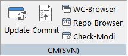
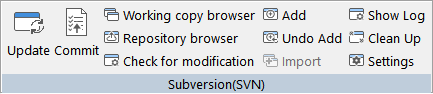
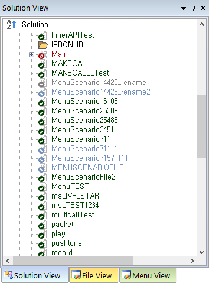

| 시나리오 형상관리 - SCE 연동 기능 | 시작 다음 이전 |
SCE 연동 기능
리본 메뉴 Home > CM(SVN) 
리본 메뉴 CM > Subversion(SVN) 
SVN 각 기능은 두번 실행 할 수 없다. 실행 중 이면 해당 버튼은 비 활성화 된다.
• Update
• Commit
• Add
• Undo Add
• Import
• Show Log
• Clean Up
• Settings
SCE의 Solution View, File View 트리에 형상관리 파일들의 상태를 표시 합니다.

|
| Copyrights(C) Bridgetec.co.kr. All Rights Reserved | 시작 다음 이전 |